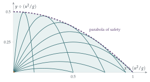

STEP II 2014, Question 10
Read the question before you go on. It is in the STEP Support Programme’s question database: step.maths.org/questions/14-s2-q10
The hook
A fountain sprays water at the same speed in every direction. The jets form a glittering dome with a sharp outer edge: inside, water passes through every point; outside, none reaches. That edge is a parabola, called the parabola of safety, because a target outside it cannot be hit by a cannon of the given muzzle speed, whatever the angle.
The surprising thing is that the boundary is not itself one of the trajectories. It is the envelope of the whole family, a curve that touches every trajectory once, exactly like the line \(y = 0\) touching the family of parabolas in Section 8.1. This question finds it with nothing more than the discriminant of a quadratic.
Before you start
Write \(x\) and \(y\) in terms of \(t\), and eliminate \(t\). How can you write \(\sec^2\theta\) in terms of \(\lambda = \tan\theta\)?
With \(x = ut\cos\theta\) and \(y = ut\sin\theta - \frac12gt^2\), substitute \(t = \frac{x}{u\cos\theta}\): \[y = x\tan\theta - \frac{gx^2}{2u^2\cos^2\theta} = \lambda x - \frac{gx^2}{2u^2}(1 + \lambda^2),\] using \(\sec^2\theta = 1 + \tan^2\theta\).
Working it through
Stage 1 Fix \(x\), vary the angle
For a fixed \(x > 0\), think of \(y\) as a function of \(\lambda\). What kind of function is it? Which values does it take as \(\lambda\) ranges over all real numbers?
For fixed \(x\), \(y\) is a quadratic in \(\lambda\) with negative leading coefficient \(-\frac{gx^2}{2u^2}\): a downward parabola in \(\lambda\). It has a maximum, and as \(\lambda \to \pm\infty\), \(y \to -\infty\). Since it is continuous, it takes every value up to its maximum. The maximum is where \(\frac{\mathrm{d}y}{\mathrm{d}\lambda} = x - \frac{gx^2}{u^2}\lambda = 0\), that is \(\lambda = \frac{u^2}{gx}\), and there \[Y = \frac{u^2}{gx}\,x - \frac{gx^2}{2u^2}\Bigl(1 + \frac{u^4}{g^2x^2}\Bigr) = \frac{u^2}{2g} - \frac{gx^2}{2u^2}. \qed\] (Equivalently: the point \((x, y)\) can be reached exactly when the quadratic \(\frac{gx^2}{2u^2}\lambda^2 - x\lambda + \frac{gx^2}{2u^2} + y = 0\) has a real root \(\lambda\), and the discriminant condition gives \(y \leq Y\).)
Stage 2 The region
The curve \(Y = \frac{u^2}{2g} - \frac{gx^2}{2u^2}\) is a downward parabola with its vertex at \(\bigl(0, \frac{u^2}{2g}\bigr)\), the height reached by firing straight up, crossing the ground at \(x = \pm\frac{u^2}{g}\), the maximum range. Every point on or below it (and above the ground) can be reached, and no point above it can (Figure 11.9.1).
Through a point strictly below the curve, how many trajectories pass? And through a point on it?
A point below the curve corresponds to a quadratic in \(\lambda\) with two real roots: two angles of projection, one high and one low. A point on the curve corresponds to a repeated root: exactly one trajectory, which touches the curve there.

Stage 3 The furthest point
The furthest reachable point from \(O\) (on or above the ground) lies on the boundary. Write the squared distance \(x^2 + Y^2\) as a function of \(x^2\). Is it increasing or decreasing?
Let \(X = x^2\). Then \[x^2 + Y^2 = X + \Bigl(\frac{u^2}{2g} - \frac{gX}{2u^2}\Bigr)^2, \qquad \frac{\mathrm{d}}{\mathrm{d}X}(x^2 + Y^2) = 1 - \frac{g}{u^2}\Bigl(\frac{u^2}{2g} - \frac{gX}{2u^2}\Bigr) = \frac12 + \frac{g^2X}{2u^4} > 0.\] So the distance increases as we move out along the boundary, and the furthest point is where the boundary meets the ground, at \(x = \frac{u^2}{g}\). The furthest distance is \[\frac{u^2}{g},\] achieved by the ordinary maximum-range shot at \(45^\circ\).■
Looking back
Turn the question around. Instead of asking where a given trajectory goes, ask which trajectories pass through a given point.
A quadratic in the parameter. For each point, the equation for \(\lambda = \tan\theta\) is a quadratic, and its discriminant decides whether the point can be reached.
Two, one or none. Two angles reach a point inside, one reaches a point on the boundary, none reaches a point outside.
What’s really going on
Envelopes
A one-parameter family of curves \(\mathrm{F}(x, y, \lambda) = 0\) often has an envelope: a curve touching every member of the family. It is found by solving \(\mathrm{F} = 0\) and \(\frac{\partial\mathrm{F}}{\partial\lambda} = 0\) together, which is exactly what we did by maximising \(y\) over \(\lambda\). Envelopes appear throughout science. The bright curve of light on the surface of a cup of coffee is the envelope of reflected rays, a caustic. A supersonic aircraft’s sonic boom is carried by the envelope of the sound waves it emits, the Mach cone. And in Section 8.1, the envelope of a family of solutions of a differential equation was itself a solution, a “singular” one.
The focus
The parabola of safety has a remarkable property: its focus is the launch point \(O\). (A parabola \(y = c - \frac{x^2}{4c}\) has its focus at the origin; here \(c = \frac{u^2}{2g}\).) Every trajectory, too, is a parabola, and the foci of all the trajectories lie on a circle of radius \(\frac{u^2}{2g}\) about \(O\). There is an energy explanation: the speed of the projectile at height \(y\) is \(\sqrt{u^2 - 2gy}\), which is zero at the height \(\frac{u^2}{2g}\) of the directrix, and parabolas whose directrix is the same line and which pass through \(O\) have their foci on that circle.
Galileo showed around 1609 that projectiles move along parabolas, and that the maximum range on level ground is at \(45^\circ\). His student Evangelista Torricelli, better known for inventing the barometer, found the parabola of safety in 1644, in his De motu gravium. For gunners it answered a practical question: which targets are within range at all? Torricelli also showed that the trajectories through a given point come in pairs with angles symmetric about the direction of the point and the vertical, the high and low shots of the question.
The thinking skill
To find the boundary of the region covered by a family of curves, fix a point and ask for which parameter values a curve passes through it. The boundary is where the number of solutions changes.
The same idea, counting solutions as a point moves, is the basis of the study of caustics in optics, of bifurcations in dynamical systems, and of catastrophe theory, which classifies how the number of solutions of an equation can change.
Try this next
An exploding firework. Try STEP II 2023, Question 10 (in OCR’s download of the 2023 papers, a zip file). It views the particles from an explosion as a sphere whose centre falls freely, and finds a particle that runs along the paraboloid of safety.
Firing up a slope. Find the maximum range of a projectile with speed \(u\) up a plane inclined at angle \(\beta\). (Hint: where does the line \(y = x\tan\beta\) meet the parabola of safety?) Show that the best angle bisects the angle between the slope and the vertical.
Two angles. Show that the two angles that reach a point \(P\) are symmetric about the bisector of the angle between \(OP\) and the vertical.
The foci. Show that the trajectory with angle \(\theta\) has its focus at \(\bigl(\frac{u^2}{2g}\sin2\theta, -\frac{u^2}{2g}\cos2\theta\bigr)\), and hence that the foci lie on a circle about \(O\).
Further reading
David Morin, Introduction to Classical Mechanics (Cambridge University Press), Chapter 3, which discusses the envelope of trajectories.
J. W. Bruce, P. J. Giblin & C. G. Gibson, “On caustics of plane curves”, American Mathematical Monthly 88 (1981). Envelopes and caustics in geometry.
E. H. Lockwood, A Book of Curves (Cambridge University Press). Envelopes, caustics and many classical curves, with constructions.